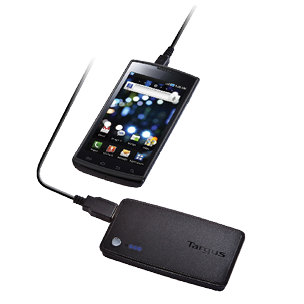

| meu produto | smartphones
Proteja o seu bolso e os seus dados - editado
Oprejuízo de ter um telefone celular roubado não é apenas financeiro, por precisar comprar outro aparelho, mas também uma tremenda dor de cabeça. Imagine pensar sobre o que o ladrão vai fazer com todos os seus dados contidos no aparelho... A primeira atitude é bloquear a tela do seu celular para diminuir o transtorno, se tiver o seu smartphone roubado ou mesmo se o perder. Além disso, você pode adotar outras medidas de segurança previamente./ editado
Seguro contra roubo
Se você desejar, é possível contratar um seguro contra roubo e perda do seu celular junto à sua operadora, na maioria das cidades. Mas, antes de assinar o contrato, fique atento à cobertura oferecida e ao valor que você precisará pagar, como a franquia para ter outro aparelho. Há casos em que é preciso desembolsar de 10% a 20% do valor do celular para se obter um novo.

A maioria dos fabricantes oferece um software especial para sincronizar o smartphone com o computador ou salvar uma cópia dos arquivos salvos no celular na “nuvem” fotos, notas e lembretes com frequência, ou, no mínimo, uma vez por mês.
Isso porque o software de backup também é usado para transferir dados do seu smartphone antigo para um novo, livrando-o, por exemplo, do trabalho de copiar toda a agenda do celular à mão para o novo aparelho.